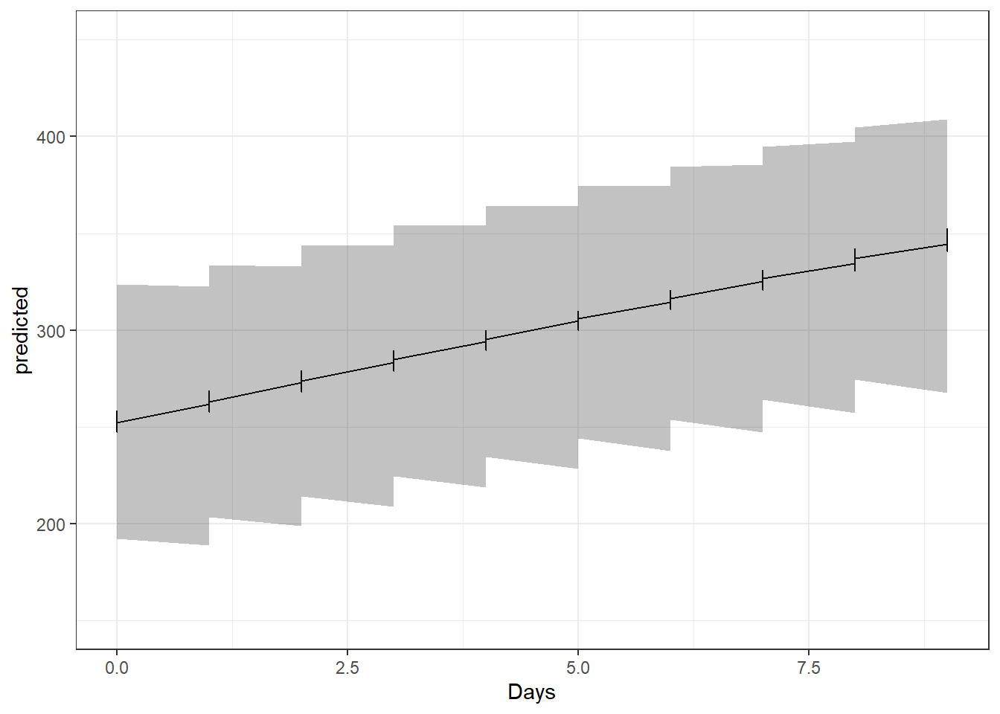

library(knitr)
library(lme4)
library(tidyverse)
data("sleepstudy")
# this is a knitting option, for knitting in the correct folder (you don't need this if you use basic Rscript)
knitr::opts_knit$set(root.dir = rprojroot::find_rstudio_root_file())A common problem you might have encountered when plotting linear mixed models, is how to represent the confidence intervals whith or without random factor effects. There are two type of representations which might be useful for you.
Disclaimer: The major part of the code you will find in this tutorial comes from here.
Library
First, let’s load the packages and data needed for this tutorial (if you brought your own data, please use it instead!)
Predictions in-sample
Sometimes you want to check how good of a fit your model is compared to the variance of your data, for example. It is a very visual check, and it is always better to represent your model effects with new data. However, it is interesting to highlight the difference between the two.
First let’s have a look at the data, plot as a scatterplot the sleepstudy data with
ggplot(), or if you have your own, plot your data !Then, fit a simple linear regression and plot it in your ggplot.
#simple scatterplot
ggplot(sleepstudy, aes(Days, Reaction)) +
geom_point(show.legend = FALSE) +
theme_bw()#linear regression
fit_lm <- lm(Reaction ~ Days, data = sleepstudy)
summary(fit_lm)
Call:
lm(formula = Reaction ~ Days, data = sleepstudy)
Residuals:
Min 1Q Median 3Q Max
-110.848 -27.483 1.546 26.142 139.953
Coefficients:
Estimate Std. Error t value Pr(>|t|)
(Intercept) 251.405 6.610 38.033 < 2e-16 ***
Days 10.467 1.238 8.454 9.89e-15 ***
---
Signif. codes: 0 '***' 0.001 '**' 0.01 '*' 0.05 '.' 0.1 ' ' 1
Residual standard error: 47.71 on 178 degrees of freedom
Multiple R-squared: 0.2865, Adjusted R-squared: 0.2825
F-statistic: 71.46 on 1 and 178 DF, p-value: 9.894e-15#plot the linear regression
ggplot(sleepstudy, aes(Days, Reaction)) +
geom_point(show.legend = FALSE) +
geom_abline(slope = fit_lm$coefficients[2], intercept = fit_lm$coefficients[1]) +
theme_bw()Until now, pretty easy. But that’s ignoring the fact that we have differents subjects in this study, and the results might not be independent of the subject effect. What does each subject effect looks like ? Let’s plot it.
ggplot(sleepstudy, aes(Days, Reaction, col = Subject)) +
geom_point(show.legend = FALSE) +
geom_abline(slope = fit_lm$coefficients[2], intercept = fit_lm$coefficients[1]) +
facet_wrap(~Subject) +
theme_bw()As you can see, even if we are not interested by the subject effect, it might have a significant impact on our response variable. We can then treat it as a random factor in order to correct for this unwanted effect.
#regression with lmer
fit <- lme4::lmer(Reaction ~ Days + (1|Subject), data = sleepstudy)Let’s now have a look at the corrected fitted line:
Code
sleepstudy |>
mutate(pred = predict(fit, re.form = NULL)) |>
ggplot(aes(Days, Reaction, col = Subject)) +
geom_point(show.legend = FALSE) +
geom_abline(slope = fit_lm$coefficients[2], intercept = fit_lm$coefficients[1], col = "grey") +
geom_line(aes(Days, pred), show.legend = FALSE) +
facet_wrap(~Subject) +
theme_bw()Some lines are really close to the mean, some are quite different! Surely, our model has improved when considering the student effect.
Now, in order to compute valid confidence intervals, we can bootstrap our data including of excluding random factors. For this, we will use the lme4::bootMer() function, and we can modify it in order to consider or not the random factors in our data set. If you want to consider random factor in the confidence intervals, you will use the parameter re.form = NULL otherwise, you will use re.form = NA.
# predict function for bootstrapping, it modifies the parameters without modifying the function in your local environment
predfn <- function(.) {
predict(., newdata=new, re.form=NULL)
}Let’s also use a nice summary function that was described in the tutorial already cited before.
# summarise output of bootstrapping, very useful!
sumBoot <- function(merBoot) {
return(
data.frame(fit = apply(merBoot$t, 2, function(x) as.numeric(quantile(x, probs=.5, na.rm=TRUE))),
lwr = apply(merBoot$t, 2, function(x) as.numeric(quantile(x, probs=.025, na.rm=TRUE))),
upr = apply(merBoot$t, 2, function(x) as.numeric(quantile(x, probs=.975, na.rm=TRUE)))
)
)
}Everything is ready, let’s bootstrap!
new <- sleepstudy #this is a fake "new" data because we are doing in-sample predictions for the moment
boot <- lme4::bootMer(fit, predfn, nsim=250, use.u=TRUE, type="parametric")Code
new |>
bind_cols(sumBoot(boot)) |>
ggplot(aes(Days, Reaction, col = Subject, fill = Subject)) +
geom_point(show.legend = FALSE) +
geom_abline(slope = fit_lm$coefficients[2], intercept = fit_lm$coefficients[1]) +
geom_line(aes(Days, fit), show.legend = FALSE) +
geom_ribbon(aes(ymin = lwr, ymax = upr), alpha = 0.3, show.legend = FALSE) +
facet_wrap(~Subject) +
theme_bw()Now, can you try modifying the function of prediction in order to get the confidence intervals without accounting for the random factor ?
predfn_no_re <- function(.) {
predict(., newdata=new, re.form=NA)
}
boot_no_re <- lme4::bootMer(fit, predfn_no_re, nsim=250, use.u=TRUE, type="parametric")
#plotting
new |>
bind_cols(sumBoot(boot_no_re)) |>
ggplot(aes(Days, Reaction, col = Subject, fill = Subject)) +
geom_point(show.legend = FALSE) +
geom_abline(slope = fit_lm$coefficients[2], intercept = fit_lm$coefficients[1]) +
geom_line(aes(Days, fit), show.legend = FALSE) +
geom_ribbon(aes(ymin = lwr, ymax = upr), alpha = 0.3, show.legend = FALSE) +
facet_wrap(~Subject) +
theme_bw()Here you can see that unlike before, the mean and confidence interval aren’t modified by the random subject effect.
Predictions with new data
We have seen in the previous part how to do in-sampling predictions and get the confidence intervals. However, it is often useful to predict our observed effect on a simulated data set, especially if you are trying to decouple and plot the effect of a specific variable.
the first step is to simulate your new data set. Here I will deviate a little bit from the tutorial we have been using until now, because I find another approach more useful. However, feel free to also have a look at how the author Dean Marchiori simulated new data.
#fake simulated response variable you are interested in, it needs to have the same name
Reaction <- seq(min(sleepstudy$Reaction),
max(sleepstudy$Reaction),
length.out = 50)
#compute all possible combination of the other variables with the same levels as the intitial dataset. If you wish to look at only one effect and have multiple variables, you can also set the ones you are not interested in to 0
new <- expand.grid("Reaction" = Reaction, "Days" = c(0:9), "Subject" = levels(sleepstudy$Subject))After that, it is virtually the same thing, you can bootstrap your data and plot the outcome
#with random effects computed
boot <- lme4::bootMer(fit, predfn, nsim=250, use.u=FALSE, type="parametric")
new |>
bind_cols(sumBoot(boot)) |>
bind_cols(predicted = predfn(fit)) |>
ggplot(aes(Days, predicted)) +
geom_line(aes(Days, fit), show.legend = FALSE) +
geom_ribbon(aes(ymin = lwr, ymax = upr), alpha = 0.3, show.legend = FALSE)+
ylim(c(150,450))+
theme_bw()
Do you have any idea why this plot looks faltering? Let’s try without accounting for random factor:
#without computing random effects
boot_no_re <- lme4::bootMer(fit, predfn_no_re, nsim=250, use.u=FALSE, type="parametric")
new |>
bind_cols(sumBoot(boot_no_re)) |>
bind_cols(predicted = predfn_no_re(fit)) |>
ggplot(aes(Days, predicted)) +
geom_line(aes(Days, fit), show.legend = FALSE) +
geom_ribbon(aes(ymin = lwr, ymax = upr), alpha = 0.3, show.legend = FALSE)+
ylim(c(150,450))+
theme_bw()If you need to compute effects with random factors, I would recommend using the method with the simulate function described in Dean Marchiori’s tutorial.
Potential discussion points
How useful was this tutorial for you ? Did you ever computed confidence intervals for mixed models before?
How difficult do you think it could be to adapt this method to
glmmodels?Do you think in-sampling prediction is useful/ interesting?